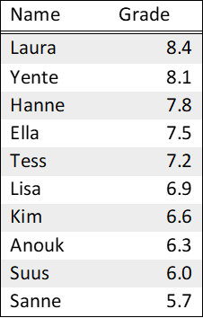

We study whether adolescents view other differently when they are
aware of what ability group (or high school track) they are assigned to.
Does it affect how similar they think certain children are? Does it
affect how much certain children have in common, or who has a better
bond with whom? Are abilities seen as more stable and is performance
attributed to internal factors rather than external factors?
To answer these research questions, we employ an between-subject
experimental design. Participants see a ranked grade list of 10
hypothetical students, who are in the 6th grade. These
‘students’ took a test to assess their reading, writing and math
comprehension. Their grades on this test consistently decrease from 8.4
to 5.7 with a value of 0.3. In the ‘grouping condition’, participants
see to what ability group (high, medium low) the students are assigned
to, based on their performance:
High ability group: 8.4, 8.1 & 7.8;
Medium ability group: 7.5, 7.2, 6.9 & 6.6;
Low ability group: 6.3, 6.0 & 5.7.
In the ’no-grouping condition, participants only see the names and
grades of the students. Participants then answer questions about these
students.
Below are two example grade lists, for each condition. Participants
are assigned to the conditions at random. To control for adverse
effects, the names on the grade list are matched on gender, so boys only
see boy-names and girls only see girl-names. Participants who identify
as non-binary are assigned at random to the boys or girls grade lists.
The names on the list are Dutch and do not have particular associations
with low or high socioeconomic status (SES, to control for potential
biases regarding ethnicity or SES. For boys and girls each, we have two
unique grade lists, to control for adverse effects regarding the names
on said list. This leads to a total of 8 unique grade lists (2
Conditions x 2 Gender x 2 versions).
Example 1) No grouping Condition - Girls
In a minute, you will read about students in 6th grade
class in primary school. The students in this class took an important
test last week. The test was about reading, writing and math. The
teacher has graded the test. Below you can see the grades. The higher
the grade, the higher that student is on the list.

Example 2) Grouping Condition - Boys
In a minute, you will read about students in 6th grade
class in primary school. The students in this class took an important
test last week. The test was about reading, writing and math. The
teacher has graded the test. Below you can see the grades. The higher
the grade, the higher that student is on the list. Based on the grade
the teacher has given a track recommendation to the students. This
recommendations determines which track in high school a student will
attend. Below you also see the recommendation.
Note: in the column “Track recommendation”, the
information between brackets (e.g. high-medium-low ability group) is not
shown to participants. As these tracks names are unique to the Dutch
educational system, these labels are only to inform international
readers.

LS0tDQp0aXRsZTogIkV4cGVyaW1lbnRhbCBEZXNpZ24iDQphdXRob3I6ICJOLkMuQS4gVnVsbGluZ3MsIEUuIEJydW1tZWxtYW4sIFMuQS4gTmVsZW1hbnMgJiBKLiBTaWVya3NtYSINCmRhdGU6ICIyMDI1LTEyLTA1Ig0Kb3V0cHV0OiBodG1sX2RvY3VtZW50DQotLS0NCg0KYGBgez1odG1sfQ0KPHN0eWxlPg0KYm9keSB7DQp0ZXh0LWFsaWduOiBqdXN0aWZ5fQ0KPC9zdHlsZT4NCmBgYA0KDQpgYGB7ciBzZXR1cCwgaW5jbHVkZT1GQUxTRX0NCmtuaXRyOjpvcHRzX2NodW5rJHNldChlY2hvID0gVFJVRSkNCmBgYA0KDQpXZSBzdHVkeSB3aGV0aGVyIGFkb2xlc2NlbnRzIHZpZXcgb3RoZXIgZGlmZmVyZW50bHkgd2hlbiB0aGV5IGFyZSBhd2FyZSBvZiB3aGF0IGFiaWxpdHkgZ3JvdXAgKG9yIGhpZ2ggc2Nob29sIHRyYWNrKSB0aGV5IGFyZSBhc3NpZ25lZCB0by4gRG9lcyBpdCBhZmZlY3QgaG93IHNpbWlsYXIgdGhleSB0aGluayBjZXJ0YWluIGNoaWxkcmVuIGFyZT8gRG9lcyBpdCBhZmZlY3QgaG93IG11Y2ggY2VydGFpbiBjaGlsZHJlbiBoYXZlIGluIGNvbW1vbiwgb3Igd2hvIGhhcyBhIGJldHRlciBib25kIHdpdGggd2hvbT8gQXJlIGFiaWxpdGllcyBzZWVuIGFzIG1vcmUgc3RhYmxlIGFuZCBpcyBwZXJmb3JtYW5jZSBhdHRyaWJ1dGVkIHRvIGludGVybmFsIGZhY3RvcnMgcmF0aGVyIHRoYW4gZXh0ZXJuYWwgZmFjdG9ycz8NCg0KVG8gYW5zd2VyIHRoZXNlIHJlc2VhcmNoIHF1ZXN0aW9ucywgd2UgZW1wbG95IGFuIGJldHdlZW4tc3ViamVjdCBleHBlcmltZW50YWwgZGVzaWduLiBQYXJ0aWNpcGFudHMgc2VlIGEgcmFua2VkIGdyYWRlIGxpc3Qgb2YgMTAgaHlwb3RoZXRpY2FsIHN0dWRlbnRzLCB3aG8gYXJlIGluIHRoZSA2XnRoXiBncmFkZS4gVGhlc2Ug4oCYc3R1ZGVudHPigJkgdG9vayBhIHRlc3QgdG8gYXNzZXNzIHRoZWlyIHJlYWRpbmcsIHdyaXRpbmcgYW5kIG1hdGggY29tcHJlaGVuc2lvbi4gVGhlaXIgZ3JhZGVzIG9uIHRoaXMgdGVzdCBjb25zaXN0ZW50bHkgZGVjcmVhc2UgZnJvbSA4LjQgdG8gNS43IHdpdGggYSB2YWx1ZSBvZiAwLjMuIEluIHRoZSDigJhncm91cGluZyBjb25kaXRpb27igJksIHBhcnRpY2lwYW50cyBzZWUgdG8gd2hhdCBhYmlsaXR5IGdyb3VwIChoaWdoLCBtZWRpdW0gbG93KSB0aGUgc3R1ZGVudHMgYXJlIGFzc2lnbmVkIHRvLCBiYXNlZCBvbiB0aGVpciBwZXJmb3JtYW5jZToNCg0KLSAgIEhpZ2ggYWJpbGl0eSBncm91cDogOC40LCA4LjEgJiA3Ljg7DQoNCi0gICBNZWRpdW0gYWJpbGl0eSBncm91cDogNy41LCA3LjIsIDYuOSAmIDYuNjsNCg0KLSAgIExvdyBhYmlsaXR5IGdyb3VwOiA2LjMsIDYuMCAmIDUuNy4NCg0KSW4gdGhlIOKAmG5vLWdyb3VwaW5nIGNvbmRpdGlvbiwgcGFydGljaXBhbnRzIG9ubHkgc2VlIHRoZSBuYW1lcyBhbmQgZ3JhZGVzIG9mIHRoZSBzdHVkZW50cy4gUGFydGljaXBhbnRzIHRoZW4gYW5zd2VyIHF1ZXN0aW9ucyBhYm91dCB0aGVzZSBzdHVkZW50cy4NCg0KQmVsb3cgYXJlIHR3byBleGFtcGxlIGdyYWRlIGxpc3RzLCBmb3IgZWFjaCBjb25kaXRpb24uIFBhcnRpY2lwYW50cyBhcmUgYXNzaWduZWQgdG8gdGhlIGNvbmRpdGlvbnMgYXQgcmFuZG9tLiBUbyBjb250cm9sIGZvciBhZHZlcnNlIGVmZmVjdHMsIHRoZSBuYW1lcyBvbiB0aGUgZ3JhZGUgbGlzdCBhcmUgbWF0Y2hlZCBvbiBnZW5kZXIsIHNvIGJveXMgb25seSBzZWUgYm95LW5hbWVzIGFuZCBnaXJscyBvbmx5IHNlZSBnaXJsLW5hbWVzLiBQYXJ0aWNpcGFudHMgd2hvIGlkZW50aWZ5IGFzIG5vbi1iaW5hcnkgYXJlIGFzc2lnbmVkIGF0IHJhbmRvbSB0byB0aGUgYm95cyBvciBnaXJscyBncmFkZSBsaXN0cy4gVGhlIG5hbWVzIG9uIHRoZSBsaXN0IGFyZSBEdXRjaCBhbmQgZG8gbm90IGhhdmUgcGFydGljdWxhciBhc3NvY2lhdGlvbnMgd2l0aCBsb3cgb3IgaGlnaCBzb2Npb2Vjb25vbWljIHN0YXR1cyAoU0VTLCB0byBjb250cm9sIGZvciBwb3RlbnRpYWwgYmlhc2VzIHJlZ2FyZGluZyBldGhuaWNpdHkgb3IgU0VTLiBGb3IgYm95cyBhbmQgZ2lybHMgZWFjaCwgd2UgaGF2ZSB0d28gdW5pcXVlIGdyYWRlIGxpc3RzLCB0byBjb250cm9sIGZvciBhZHZlcnNlIGVmZmVjdHMgcmVnYXJkaW5nIHRoZSBuYW1lcyBvbiBzYWlkIGxpc3QuIFRoaXMgbGVhZHMgdG8gYSB0b3RhbCBvZiA4IHVuaXF1ZSBncmFkZSBsaXN0cyAoMiBDb25kaXRpb25zIHggMiBHZW5kZXIgeCAyIHZlcnNpb25zKS4NCg0KLS0tLS0tLS0tLS0tLS0tLS0tLS0tLS0tLS0tLS0tLS0tLS0tLS0tLS0tLS0tLS0tLS0tLS0tLS0tLS0tLS0tLS0tLS0tLS0tDQoNCiMjIEV4YW1wbGUgMSkgTm8gZ3JvdXBpbmcgQ29uZGl0aW9uIC0gR2lybHMNCg0KSW4gYSBtaW51dGUsIHlvdSB3aWxsIHJlYWQgYWJvdXQgc3R1ZGVudHMgaW4gNl50aF4gZ3JhZGUgY2xhc3MgaW4gcHJpbWFyeSBzY2hvb2wuIFRoZSBzdHVkZW50cyBpbiB0aGlzIGNsYXNzIHRvb2sgYW4gaW1wb3J0YW50IHRlc3QgbGFzdCB3ZWVrLiBUaGUgdGVzdCB3YXMgYWJvdXQgcmVhZGluZywgd3JpdGluZyBhbmQgbWF0aC4gVGhlIHRlYWNoZXIgaGFzIGdyYWRlZCB0aGUgdGVzdC4gQmVsb3cgeW91IGNhbiBzZWUgdGhlIGdyYWRlcy4gVGhlIGhpZ2hlciB0aGUgZ3JhZGUsIHRoZSBoaWdoZXIgdGhhdCBzdHVkZW50IGlzIG9uIHRoZSBsaXN0Lg0KDQo8Y2VudGVyPg0KDQohW10oaW1hZ2VzL2NsaXBib2FyZC0yMDI3NzgzMjg0LnBuZykNCg0KPGNlbnRlcj4NCg0KLS0tLS0tLS0tLS0tLS0tLS0tLS0tLS0tLS0tLS0tLS0tLS0tLS0tLS0tLS0tLS0tLS0tLS0tLS0tLS0tLS0tLS0tLS0tLS0tDQoNCiMjIEV4YW1wbGUgMikgR3JvdXBpbmcgQ29uZGl0aW9uIC0gQm95cw0KDQpJbiBhIG1pbnV0ZSwgeW91IHdpbGwgcmVhZCBhYm91dCBzdHVkZW50cyBpbiA2XnRoXiBncmFkZSBjbGFzcyBpbiBwcmltYXJ5IHNjaG9vbC4gVGhlIHN0dWRlbnRzIGluIHRoaXMgY2xhc3MgdG9vayBhbiBpbXBvcnRhbnQgdGVzdCBsYXN0IHdlZWsuIFRoZSB0ZXN0IHdhcyBhYm91dCByZWFkaW5nLCB3cml0aW5nIGFuZCBtYXRoLiBUaGUgdGVhY2hlciBoYXMgZ3JhZGVkIHRoZSB0ZXN0LiBCZWxvdyB5b3UgY2FuIHNlZSB0aGUgZ3JhZGVzLiBUaGUgaGlnaGVyIHRoZSBncmFkZSwgdGhlIGhpZ2hlciB0aGF0IHN0dWRlbnQgaXMgb24gdGhlIGxpc3QuIEJhc2VkIG9uIHRoZSBncmFkZSB0aGUgdGVhY2hlciBoYXMgZ2l2ZW4gYSB0cmFjayByZWNvbW1lbmRhdGlvbiB0byB0aGUgc3R1ZGVudHMuIFRoaXMgcmVjb21tZW5kYXRpb25zIGRldGVybWluZXMgd2hpY2ggdHJhY2sgaW4gaGlnaCBzY2hvb2wgYSBzdHVkZW50IHdpbGwgYXR0ZW5kLiBCZWxvdyB5b3UgYWxzbyBzZWUgdGhlIHJlY29tbWVuZGF0aW9uLg0KDQoqKipOb3RlOiBpbiB0aGUgY29sdW1uICJUcmFjayByZWNvbW1lbmRhdGlvbiIsIHRoZSBpbmZvcm1hdGlvbiBiZXR3ZWVuIGJyYWNrZXRzIChlLmcuIGhpZ2gtbWVkaXVtLWxvdyBhYmlsaXR5IGdyb3VwKSBpcyBub3Qgc2hvd24gdG8gcGFydGljaXBhbnRzLiBBcyB0aGVzZSB0cmFja3MgbmFtZXMgYXJlIHVuaXF1ZSB0byB0aGUgRHV0Y2ggZWR1Y2F0aW9uYWwgc3lzdGVtLCB0aGVzZSBsYWJlbHMgYXJlIG9ubHkgdG8gaW5mb3JtIGludGVybmF0aW9uYWwgcmVhZGVycy4qKioNCg0KPGNlbnRlcj4NCg0KIVtdKGltYWdlcy9jbGlwYm9hcmQtOTc5OTkzNDA1LnBuZykNCg0KPGNlbnRlcj4NCg==